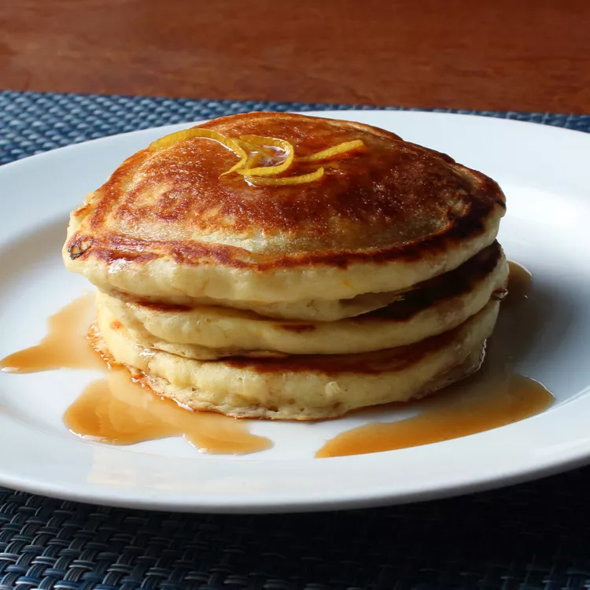

Lemon-Ricotta Pancakes

These lemon ricotta pancakes are lovely served with a pat of butter, a pinch of lemon zest, and a drizzle of maple syrup. These lemon ricotta pancakes are lovely served with a pat of butter, a pinch of lemon zest, and a drizzle of maple syrup. these pancakes were any lighter, they would float off the plateIf these pancakes were any lighter, they would float off the plate.
Ingredients
- ¾ cup cold water or milk
- ½ teaspoon baking soda
- ½ cup ricotta cheese
- 1 large egg
- 1 tablespoon grated lemon zest (just the yellow part of the skin)
- 1 tablespoon vegetable oil
- 1 tablespoon white sugar
- ⅛ teaspoon vanilla extract
- 1 cup self-rising flour
- 2 tablespoons melted butter
- 1 tablespoon lemon juice
- 2 tablespoons self-rising flour
Directions
- Step 1
Whisk together cold water and baking soda in a mixing bowl. Add ricotta cheese, egg, lemon zest, vegetable oil, sugar, and vanilla; whisk until smooth, breaking up lumps of cheese as you mix.
- Step 2
Whisk in 1 cup plus 2 tablespoons self-rising flour, melted butter, and lemon juice until most of flour disappears into batter. Let batter sit at room temperature for 15 minutes.
- Step 3
Heat a lightly oiled griddle over medium-high heat.
- Step 4
Drop batter by large spoonfuls onto the hot griddle and cook until bubbles form and the edges are dry, 2 to 3 minutes. Flip and cook until browned on the other side, 2 to 3 minutes. Repeat with remaining batter.